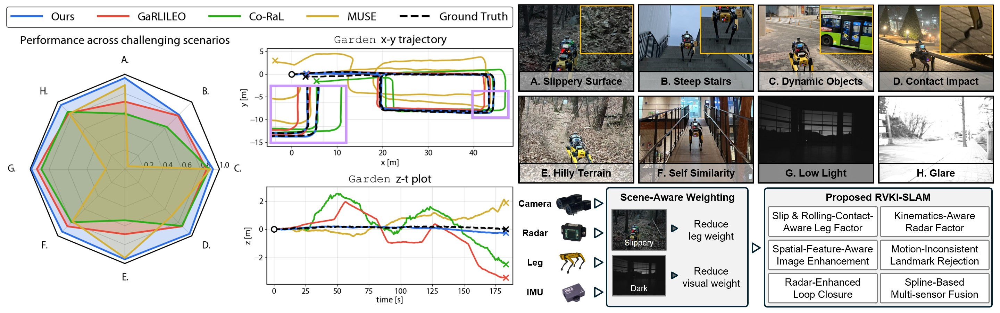
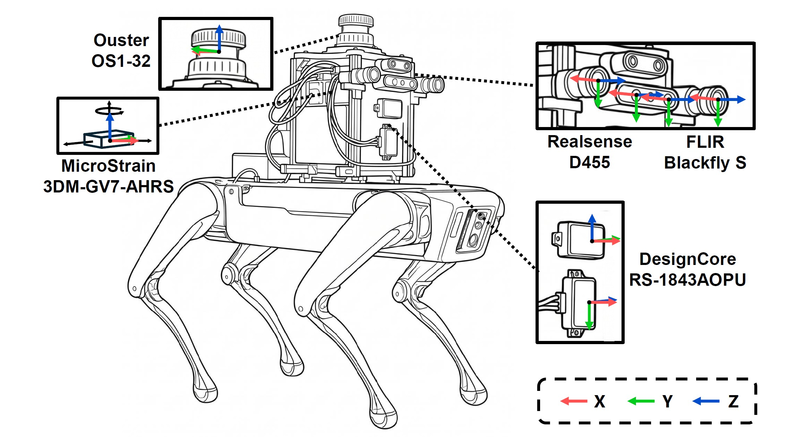

Left: Performance comparison between RAGNAROK and baseline methods, with scores computed as ATEmean/(ATEmean+ATE).
Right-Top: Representative challenging scenarios from the self-collected dataset. Right-Bottom: Overview of the RAGNAROK pipeline.
Abstract
Legged robots offer superior mobility in unstructured environments, but reliable operation in such conditions requires robust state estimation. To address the vulnerability of proprioceptive estimators in rough terrain, recent methods have incorporated radar to provide velocity measurements. However, their limited yaw observability still leads to drift, and failure-aware fusion for adverse environments remains underexplored. In this letter, we present RAGNAROK, the first radar-visual-kinematic-inertial SLAM designed for robust operation in challenging environments. It integrates slip- and rolling-contact-aware leg velocity estimation, kinematics-aware multi-radar factor, and degradation-aware image enhancement. We further incorporate continuous-time proprioceptive fusion, adaptive multi-sensor weighting, and online calibration. RAGNAROK outperforms state-of-the-art baselines across diverse and challenging conditions, reducing the average RMSE ATE from 1.172 m to 0.379 m, corresponding to a 67.7% error reduction. The code and dataset will be released upon acceptance.
Sensor System

Sensor Specifications
| Sensor | Manufacturer | Model | Topic name | Frequency | Description |
|---|---|---|---|---|---|
| Stereo camera | RealSense | D455 |
/camera/camera/infra1/image_rect_raw/camera/camera/infra2/image_rect_raw
|
15 Hz 15 Hz |
Sensor Measurements |
| Mono camera | FLIR | Blackfly S |
/camera_left/image_raw/camera_right/image_raw
|
15 Hz 15 Hz |
|
| IMU | MicroStrain | 3DM-GV7-AHRS | /imu/data |
100 Hz | |
| Legged robot | Boston Dynamics | Spot |
/joint_states/status/feet
|
150 Hz 150 Hz |
|
| Radar | DesignCore | RS-1843AOPU |
/ti_mmwave_0/radar_scan_pcl/ti_mmwave_1/radar_scan_pcl
|
15 Hz 15 Hz |
|
| LiDAR | Ouster | OS1-32 | /ouster/points |
10 Hz | Ground-truth Reference |
| Laser scanner | Leica | RTC360 | – | – |
Radar Specification
| Sensor Name | Framerate | Wave frequency | Waveform | TX antennas | RX antennas | Range resolution | Max range | Doppler velocity resolution | Max Doppler velocity | Azimuth resolution | Elevation resolution |
|---|---|---|---|---|---|---|---|---|---|---|---|
| DesignCore RS-1843AOPU | 15 Hz | 77 GHz | FMCW | 3 | 4 | 0.068 m | 13.92 m | 0.08 m/s | 2.56 m/s | 15° | 58° |
Dataset Sequences
The RAGNAROK Dataset contains indoor, outdoor, and mixed sequences collected across diverse illumination conditions, elevation changes, self-similar structures, and loop trajectories.
| Sequence | Outdoor | Indoor | Length (m) | Elevation | Self-similarity | # of Loops |
|---|---|---|---|---|---|---|
| Terrace | Dark | - | 68.38 | - | - | 1 |
| TerraceLoop | Dark | - | 134.47 | - | - | 2 |
| Garden | Dark | - | 162.54 | ✓ | - | 2 |
| Quad | Dim | - | 438.28 | ✓ | - | 1 |
| Overpass | Glare | - | 160.10 | ✓ | - | 1 |
| Mountain-Long | ✓ | - | 207.59 | ✓ | - | 1 |
| Mountain-Short | ✓ | - | 170.14 | ✓ | - | 1 |
| Atrium | - | Dark | 68.98 | - | - | 2 |
| FloorGyre | - | Dark | 77.10 | - | - | - |
| Upstair | - | Dim | 96.65 | ✓ | ✓ | - |
| Downstair | - | ✓ | 216.23 | ✓ | - | 1 |
| CorriLoop | - | ✓ | 205.38 | - | ✓ | 2 |
| SlopeStair | Glare | ✓ | 137.25 | ✓ | - | 1 |
| Tunnel | Dark | Dim | 208.51 | - | ✓ | - |
Qualitative Comparison
BibTeX
@article{kim2026ragnarok,
title={RAGNAROK: Radar-Aided Gravity-Normalized Alignment for Robust Open Keyframe-based Radar-Visual-Kinematic-Inertial SLAM},
author={Kim, Hanjun and Noh, Chiyun and Jung, Sangwoo and Jung, Jaehyung and Boche, Simon and Le Gentil, Cédric and Leutenegger, Stefan and Kim, Ayoung},
journal={IEEE Robotics and Automation Letters},
year={2026},
url={https://ragnarok-rvki-slam.github.io/RAGNAROK/}
}